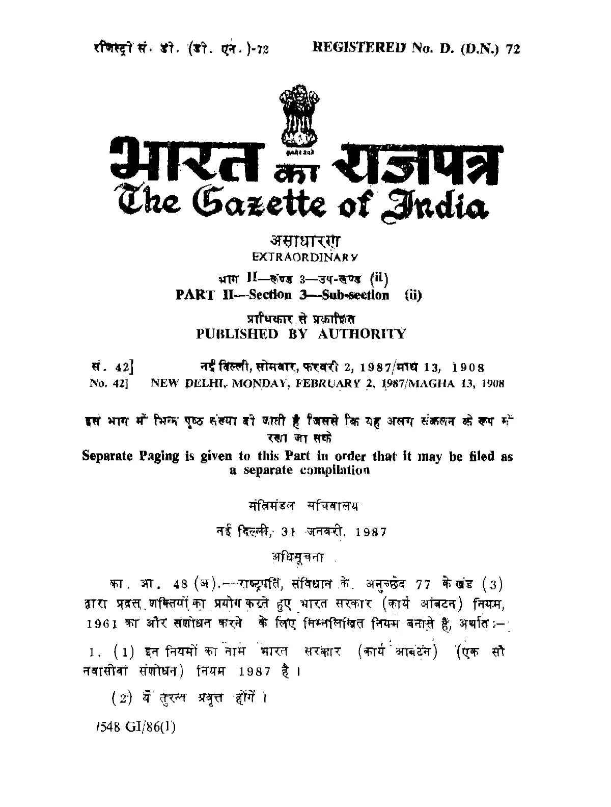
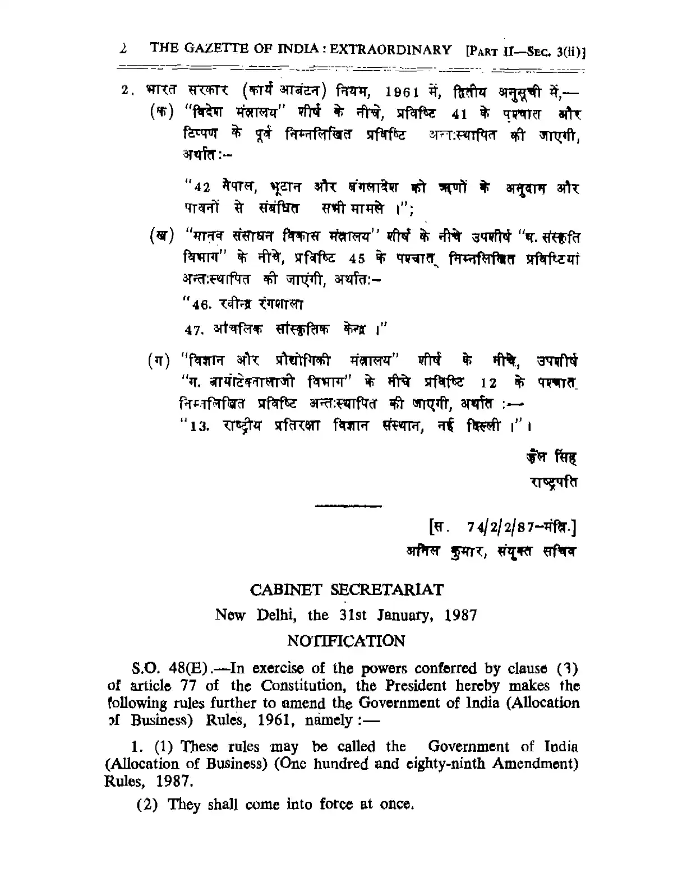
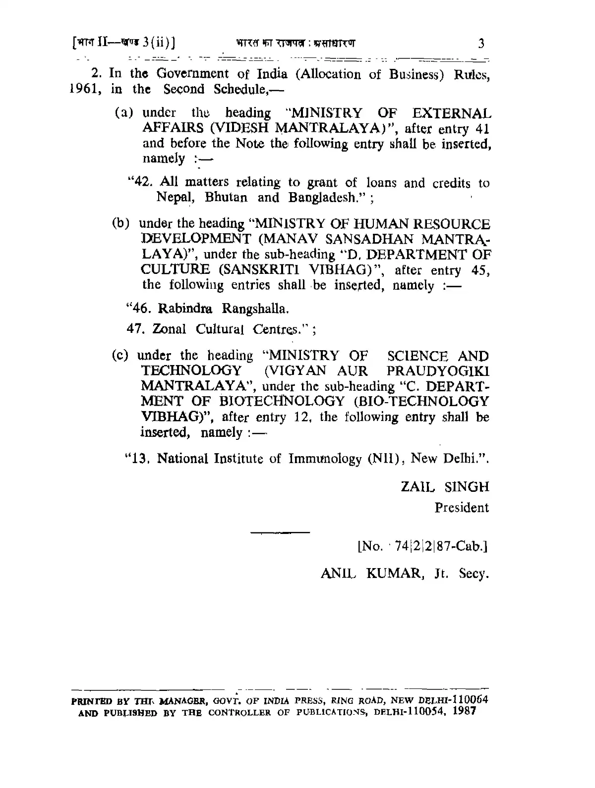

Amendment #189 (S.O. 48(E), 1987)
3 changes: 0 to the First Schedule, 3 to the Second Schedule. 3 applied
The order, page by page
Page 1 of 4

Page 2 of 4

Page 3 of 4

123after Schedule 2 › MINISTRY OF EXTERNAL AFFAIRS › entry 41
- 42. All matters relating to grant of loans and credits to Nepal, Bhutan and Bangladesh.
applied at schedule 2 › ministry MINISTRY OF EXTERNAL AFFAIRS › entry 42 in the Rules after #189
after Schedule 2 › MINISTRY OF HUMAN RESOURCE DEVELOPMENT › DEPARTMENT OF CULTURE › entry 45
- 46. Rabindra Rangshalla.
- 47. Zonal Cultural Centres.
applied at schedule 2 › ministry MINISTRY OF HUMAN RESOURCE DEVELOP- MENT › department D › entry 46 in the Rules after #189
after Schedule 2 › MINISTRY OF SCIENCE AND TECHNOLOGY › DEPARTMENT OF BIOTECHNOLOGY › entry 12
- 13. National Institute of Immunology (NII), New Delhi.
applied at schedule 2 › ministry MINISTRY OF SCIENCE AND TECHNOLOGY › department C › entry 13 in the Rules after #189
states inferred loose
Page 4 of 4
How this document was read
Changes placed by an inference rule
| Change | Rule | Status | What |
|---|---|---|---|
| 3 | loose | accepted | change 3: department DEPARTMENT OF BIOTECHNOLOGY taken for department DEPARTMENT or BIO. TECHNOLOGY, named loosely |
From the Government of India (Allocation of Business) Rules, 1961 and their amendments, as published by the Cabinet Secretariat (cabsec.gov.in), read by orgpedia. The readings of the older scanned gazettes have known gaps.